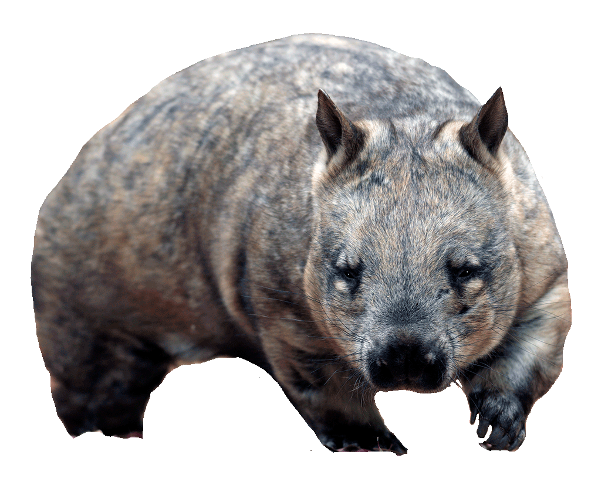

Northern
Hairy-Nosed
Wombat
Lasiorhinus Krefftii

DESCRIPTION
Northern hairy-nosed wombats have bodies covered in soft, grey fur and even have fur on their noses, a trait that sets them apart from the common wombat. They have longer, more
pointed ears and a much broader muzzle than the other two species.Individuals can be 35 cm high, up to 1 m long and weigh up to 40 kg.
BEHAVIOR
The northern hairy-nosed wombat is nocturnal, living underground in networks of burrows. They avoid coming above ground during harsh weather, as their burrows maintain a constant humidity and temperature. The fat reserves and low metabolic rate of this species permit northern hairy-nosed wombats to go without food for several days when food is scarce.

The northern hairy-nosed wombat (Lasiorhinus krefftii) is one of the rarest land mammals in the world and is
critically endangered. Its historical range extended across New South Wales, Victoria, and Queensland as recently as 100 years ago, but it is now restricted to one place, a 3-km range within the 32-km Epping Forest National Park in Queensland.